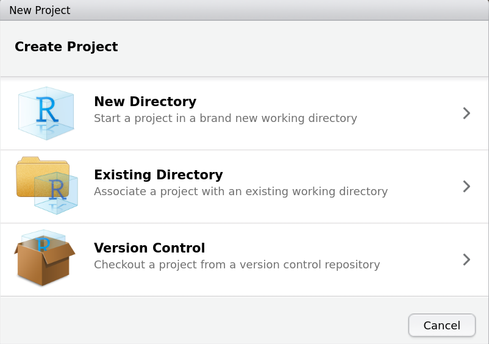

install.packages("easystats", repos = "https://easystats.r-universe.dev")Preface
R Syntax
Entering your statistical analyses and data manipulations using syntax might initially be daunting. However, there are some major advantages of this approach over pointing and clicking. Creating a syntax file to perform your analyses will enable you to:
- Automatically document exactly how you performed an analysis, including exactly which data set was used.
- Easily reproduce an analysis.
- Easily repeat an analysis with minor changes or on a modified data set.
- Run a time-consuming series of analyses while you are away from your computer.
- Use copy and paste to create templates and/or macros to assist with performing repetitive analyses.
- Use your code to unambiguously explain your analysis to someone (such as a statistician).
- Perform your analyses more quickly as typing (once you know what to type) is usually faster than using menus or combo boxes.
- Backup your analysis using a small text file.
Initially, we will use syntax in an interactive fashion. In other words, we will enter a command directly into R, examine the results, and then enter the next command. Later, we will look at storing these commands in a single file that can be run in one action (a script .R file).
It is worth noting at the outset that R is case-sensitive. This means that Anova and anova are different commands. Variable names can use both lower and upper case, but AGE, age, and Age are three different variables. To minimise the possibility of confusion, using only lower case for variable names is recommended, although some people capitalise subsequent words (e.g., ChildAge).
Additional sources of information
The on-line help that comes with R contains a lot of useful information, especially for syntax. If you cannot recall the particular syntax needed, you can use the dialogue boxes and examine the syntax that R includes in the Results Window. There are also many R tutorials on the Internet and some useful books in the Science Library.
The Quick-R web page, is a good and brief introduction to R.
Installing R
A brief introduction to R and visual instructions on how to install it can be found on the following YouTube video.
The following instructions are given to install R on your own computer.
Note: Labs assume you have R version 4.0.3 installed.
Instructions for Windows
- Go to the CRAN webpage (R Core Team 2020).
- Select Download R for Windows.
- Click on install R for the first time and follow the instructions.
- Install
Ras any other program. You don’t need a short cut to R. - When installing, select the 64 bit option (unless your computer is an old 32 bit one).
- Download and install RStudio Free Desktop version from: RStudio.
Instructions for Macintosh
- Go to the CRAN webpage.
- Select Download R for (Mac) OS X.
- Download the last binary version of
R. - Follow the link to download XQuartz.
- Download and install RStudio Free Desktop version from: RStudio.
- Install all the packages that you downloaded.
- Open
RStudioand go to Tools > Terminal > New Terminal. - Select the tab for Terminal on the left bottom panel of
RStudio. - Type:
xcode-select --installin the terminal and click the Return or Enter Key. - Close the terminal.
Installing extra packages
We need to install extra packages that add additional commands to R (R Core Team 2020), one of them, pubh (Athens 2020) is essential for both PUBH725 and PUBH726. Open RStudio and copy the following commands in the Console panel.
Note: Labs assume you have
Rversion 4.1.1 or later andpubhversion 1.2.5 or later.
install.packages(c("bestglm", "bookdown", "broom.mixed", "epiDisplay",
"forecast", "ftExtra", "GGally", "ggeffects",
"ggfortify", "ggpubr", "ggraph", "ggsci", "heatmaply",
"import", "ISwR", "jtools", "latex2exp", "plotly",
"pubh", "psych", "qqplotr", "reshape2", "rmarkdown",
"rms", "rstatix", "sjlabelled", "sjPlot", "sjmisc",
"scales", "season", "sparkline", "tidyverse", "vcd"))Setting up RStudio
The first thing you would like to do, is to organise all your documents on a single directory (folder). For better results, please follow these instructions:
- Create a new directory in your computer, within your Documents directory and name it PUBH725.
- Create a sub directory within your new directory, PUBH725 and name it data.
- Create a sub directory within your new directory, PUBH725 and name it figures.
- Open
RStudioand go toFile > New Project. Select Existing Directory (see Figure @ref(fig:NewProject)). - Browse for the directory PUBH725 in your computer and select Create Project.

Existing Directory.There are several functions contained on packages; these packages have to be loaded for each new session or script. We are going to learn how to load these packages in the first lab.
Athens, J. (2020), pubh: A Toolbox for Public Health and Epidemiology.
R Core Team (2020), R: A language and environment for statistical computing, Vienna, Austria: R Foundation for Statistical Computing.